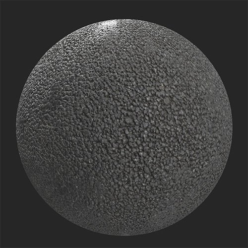
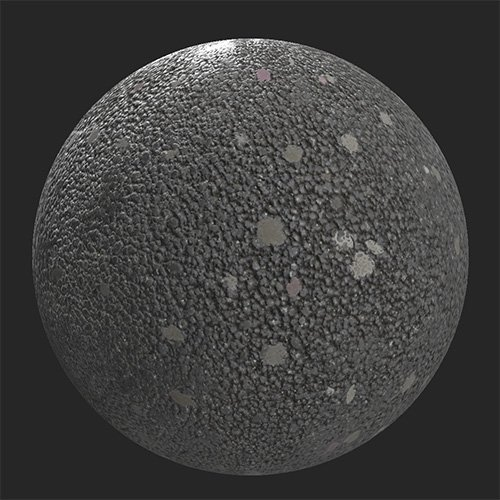

In: Wear and Finish
Add discarded chewing gum to your material. This filter is great for creating pavements or other materials for public walking areas.Before and after using the Discarded Gums filter on an asphalt material.


Basic parameters
Advanced Parameters